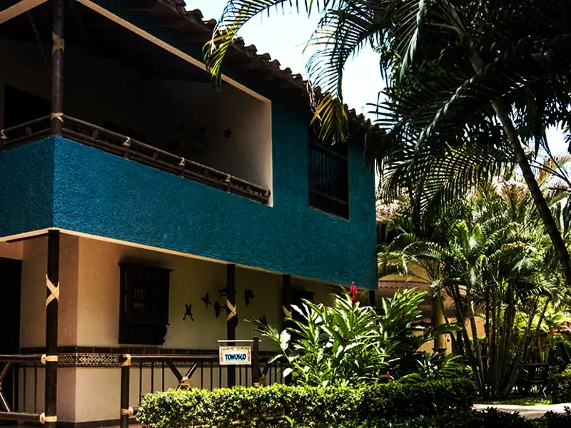
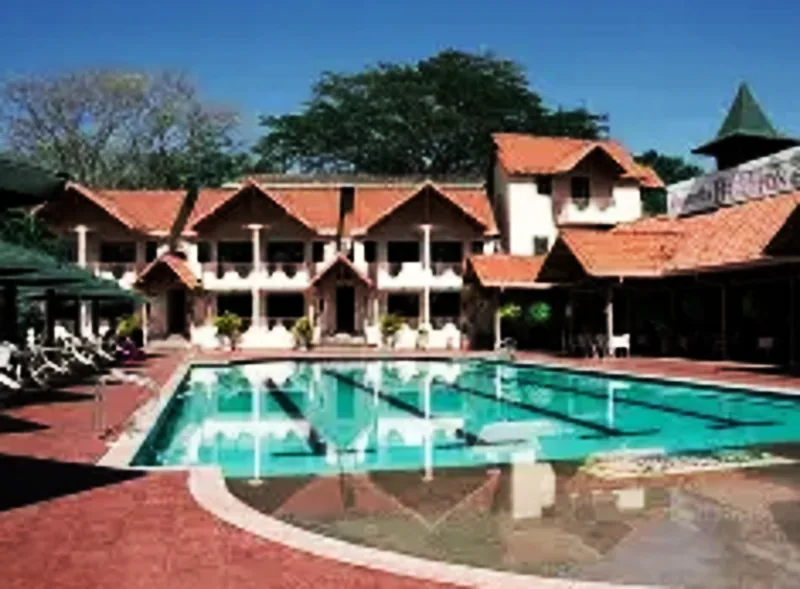
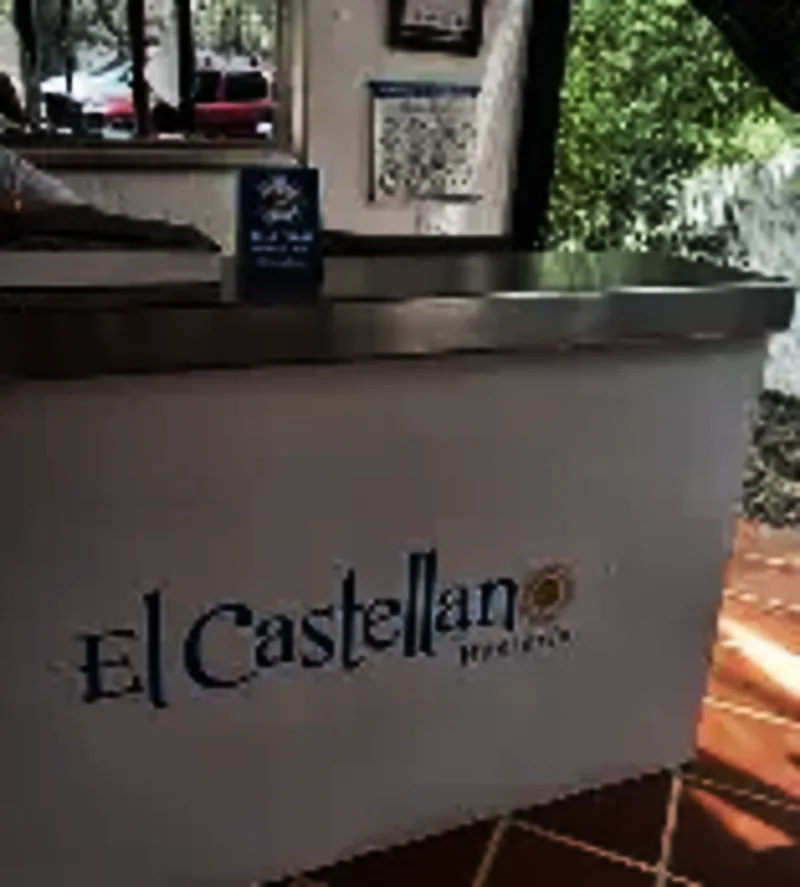
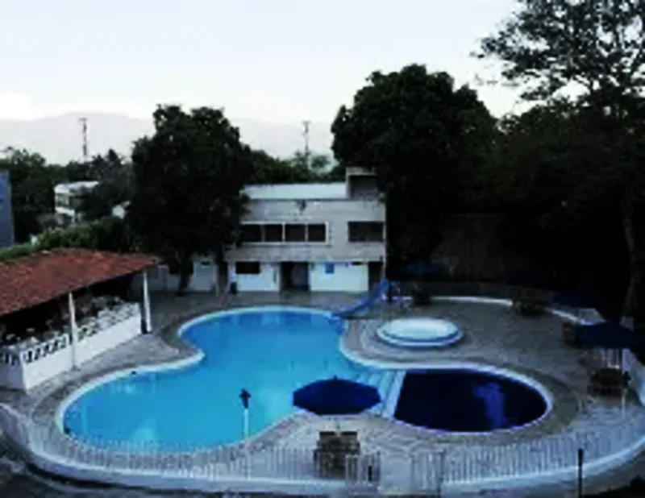
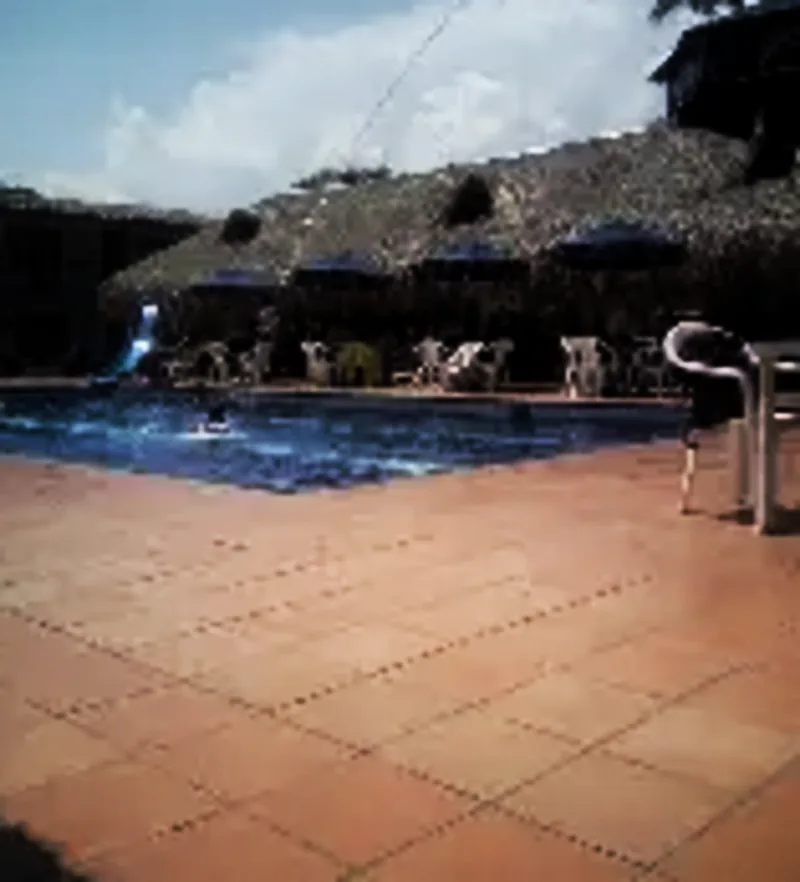
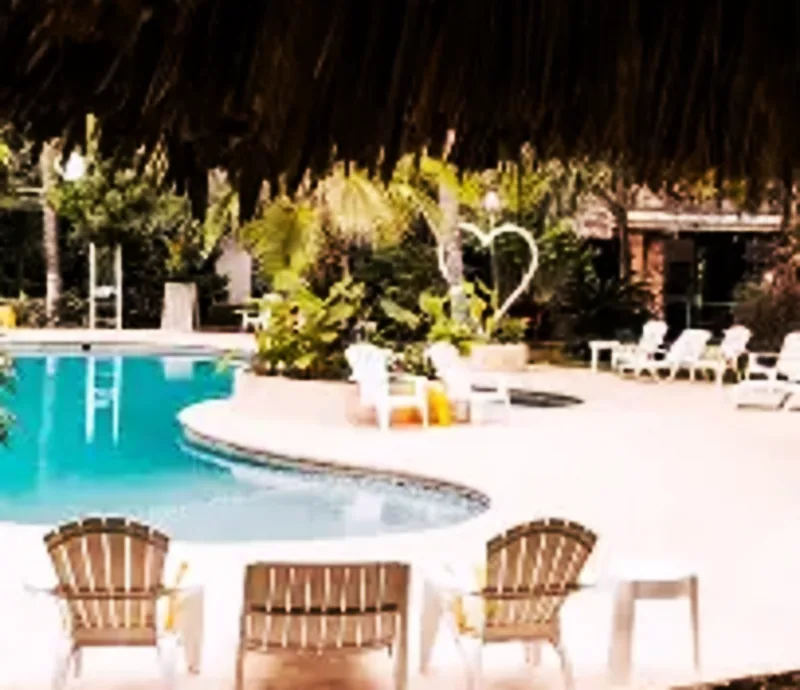

Lo Más Completo
Estas hosterías ofrecen paquetes que incluyen alojamiento, desayuno, almuerzo, cena y actividades recreativas en un sólo precio. Llegas, te instalas y no te preocupas por nada más.

Desde $120.000Vereda Tonusco · Cabañas con jacuzzi
33 cabañas con jacuzzi privado, piscina para adultos y niños, parque infantil y zonas verdes inmensas. Paquetes todo incluido con alimentación completa, fogatas nocturnas y actividades recreativas. La favorita de las familias.
 Desde $180.000
Desde $180.000
Centro Histórico · Spa + Piscinas
Spa completo, piscinas y plan todo incluido en el corazón del Patrimonio Histórico Nacional. Alimentación gourmet, zonas húmedas y coctelería. La experiencia más completa para parejas y escapadas románticas.
 Desde $160.000
Desde $160.000
Vía al mar · Hotel campestre
4.5 estrellas con paquetes todo incluido: alojamiento, alimentación completa, actividades recreativas y atención personalizada. Ambiente campestre a pocos minutos del centro de Santa Fe de Antioquia.
 Desde $87.000
Desde $87.000
Vía principal · Lago + 3 piscinas
El lago más grande del occidente antioqueño. 3 piscinas, kayak, pesca, zonas BBQ y planes todo incluido. Espacios inmensos ideales para familias númerosas y grupos grandes.
Refréscate
Si tu prioridad es una buena piscina para pasar el día, estas hosterías tienen algunas de las mejores zonas húmedas de Santa Fe de Antioquia:
Desde $110.000
Zona centro · Ambiente festivo
Bar-restaurante con piscina grande y ambiente animado. La opción perfecta para grupos de amigos que buscan piscina, buena comida, música y celebración en un sólo lugar.

Desde $80.000Vía al mar · Piscina + Lounge
Piscina con zona lounge, bar y amplias áreas verdes. Ambiente relajado con buena música y excelente relación calidad-precio. Ideal para pasar el día completo.

Desde $95.000A 4km del centro · Tranquilidad total
A sólo 4 km del centro, El Castellano ofrece piscina, jacuzzi y senderos ecológicos en un entorno de paz total. Ideal para quienes buscan tranquilidad sin alejarse demasiado del pueblo.
Las Más Accesibles
No necesitas gastar una fortuna para disfrutar de una hostería en Santa Fe de Antioquia. Estas opciónes ofrecen excelente calidad a precios accesibles:

Desde $87.000Centro · 7 cuadras del parque
La opción más económica con excelente ubicación. A sólo 7 cuadras del Parque Principal, con piscina, restaurante de comida casera y ambiente familiar. La mejor relación calidad-precio de Santa Fe.

Desde $90.000Zona campestre · Ambiente familiar
Hostería campestre con amplias zonas verdes, piscina, restaurante y juegos infantiles. Ambiente tranquilo ideal para familias que buscan espacio y naturaleza a buen precio.
Vía al mar · Piscina + Lounge
La opción más accesible para disfrutar piscina y buen ambiente en Santa Fe. Zona lounge junto a la piscina, bar con precios justos y áreas verdes para descansar.
Escapada Romántica
Santa Fe de Antioquia es uno de los destinos románticos favoritos de los antioqueños. Estas hosterías son perfectas para una escapada en pareja:
Desde $180.000
Centro Histórico · Spa romántico
El plan romántico por excelencia en Santa Fe de Antioquia. Spa para parejas, cena a la luz de las velas, jacuzzi y piscinas en un entorno colonial mágico en pleno centro histórico.

$490.000/nocheZona rural · Resort exclusivo
El alojamiento más exclusivo de Santa Fe de Antioquia. Tipo resort con piscina privada, senderismo ecológico, desayuno en cama y el mejor servicio personalizado para una experiencia inolvidable en pareja.
A 4km del centro · Íntimo y tranquilo
Ambiente íntimo y tranquilo a sólo 4 km del centro. Jacuzzi bajo las estrellas, piscina con vista al paisaje antioqueño y senderos ecológicos para caminar en pareja. Romántico y accesible.
Viaja con tu Mascota
No dejes a tu mascota en casa. Varias hosterías en Santa Fe de Antioquia reciben a perros y otras mascotas con los brazos abiertos, para que disfrutes en familia completa.
Te recomendamos siempre confirmar la política pet friendly directamente con la hostería antes de reservar, ya que algunas tienen restricciones por tamaño, número de mascotas o temporada alta.
Resuelve tus dudas
¿Qué tipo de plan buscas?
¿Cuántas personas y cuándo?
Tus datos de contacto
Confirma tus datos